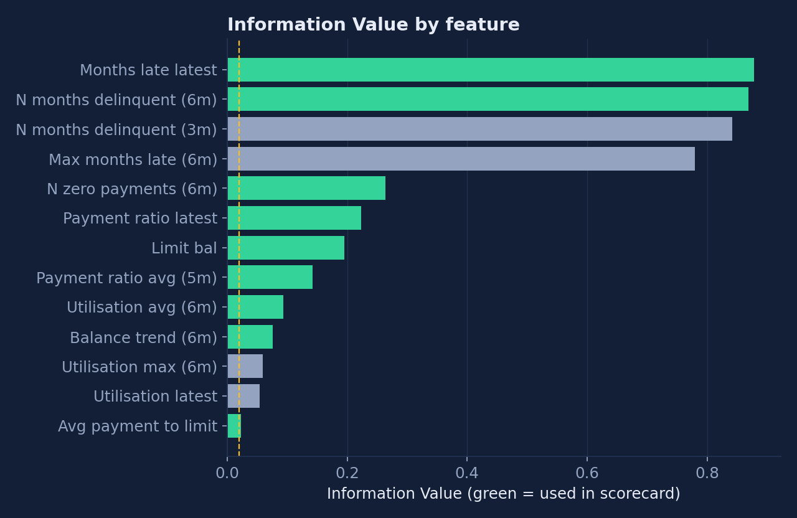
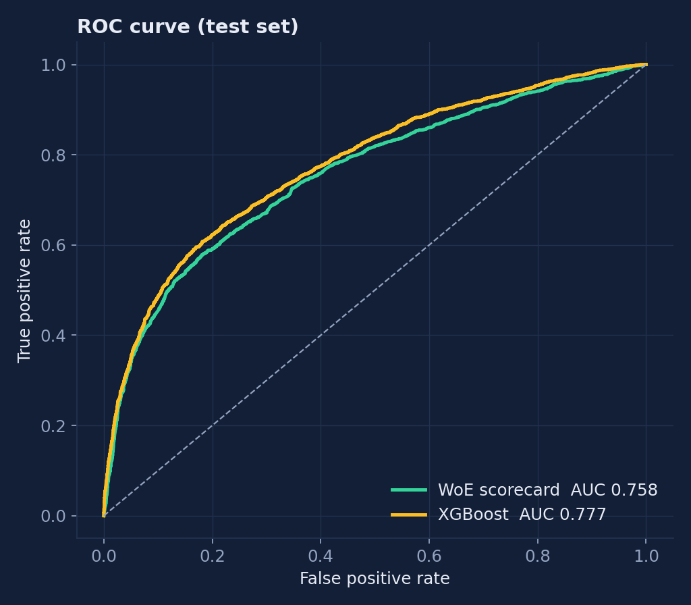
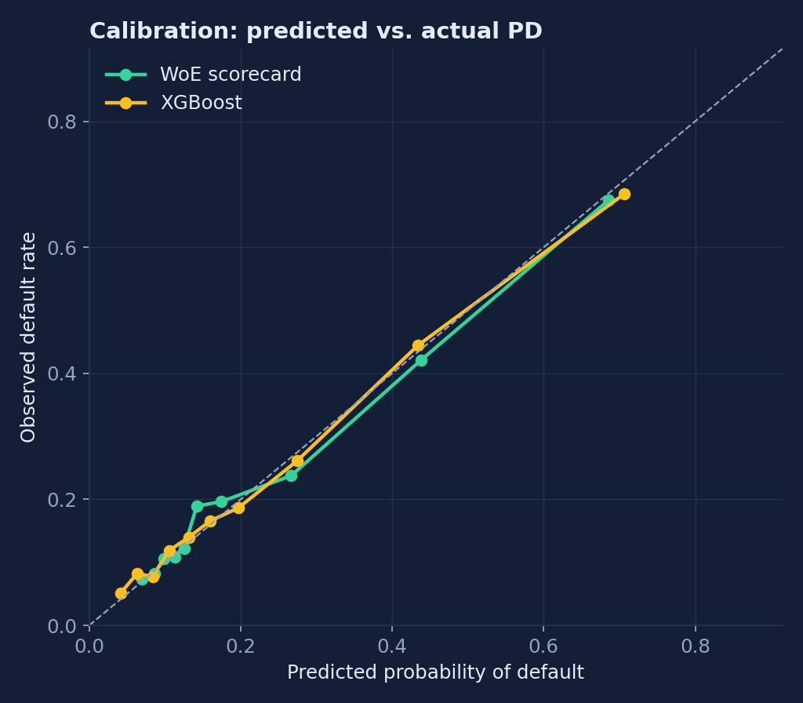
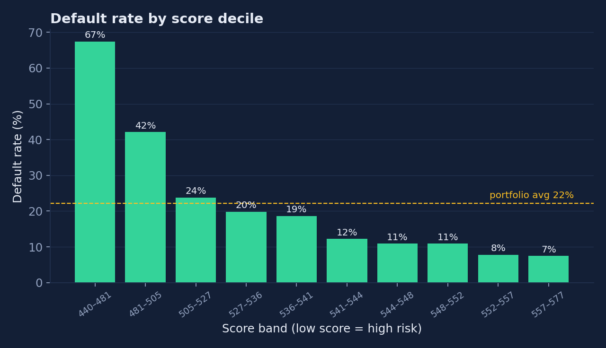
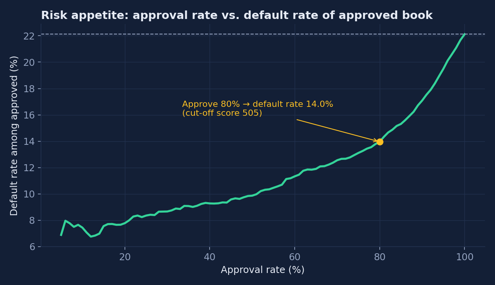
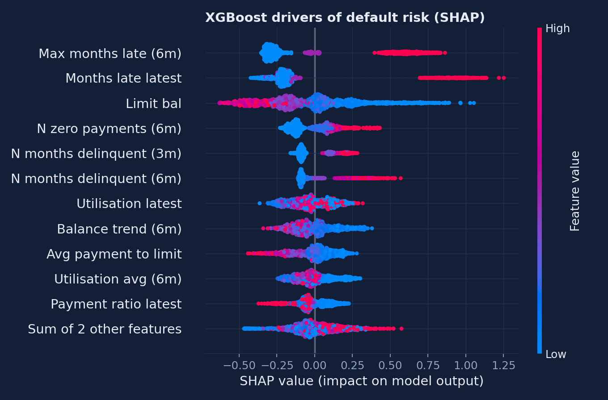

Case study · Risk & ML
Credit Risk Scoring Model
A probability-of-default model and points-based credit scorecard built the way banks build them, compared against an XGBoost model explained with SHAP. It rebuilds, on public data, the credit scoring work I did at a commercial bank.
The problem
A lender has to decide who gets credit. If the bar is too loose, defaults eat the margin; if it's too strict, good customers are turned away. The goal is a risk score that ranks applicants reliably, maps to a clear approval cut-off, and can be explained to a credit committee and a regulator.
Data
UCI Default of Credit Card Clients: 30,000 cardholders with 6 months of repayment status, bills and payments, and a 22.1% default rate. I built 13 behavioral features covering delinquency, utilization, repayment ratios and credit limit. Sex, marital status, education and age were excluded on fair-lending grounds.
Approach
- WoE binning, written from scratch. Starting from quantile bins, any bin under 5% of borrowers is merged, and neighboring bins are merged until the bad rate moves in one direction only, so the score always behaves as expected.
- Feature selection. Keep features with Information Value ≥ 0.02 and drop the weaker of any highly correlated pair.
- Sign-constrained logistic regression. Any feature whose coefficient contradicts the WoE logic is removed, and the model is refit.
- Scaling to points. 600 points = 50:1 odds, and every 20 points doubles the odds. The result is a points table a loan officer can read.
- Challenger model. XGBoost with early stopping, explained with exact TreeSHAP values.

Results
| Model | AUC | Gini | KS | Brier |
|---|---|---|---|---|
| WoE scorecard (9 features) | 0.758 | 0.515 | 0.397 | 0.140 |
| XGBoost (13 features) | 0.777 | 0.554 | 0.427 | 0.135 |



Business impact
The scorecard turns risk appetite into a single number. With a cut-off score of 505, the lender approves 80% of applicants, and the default rate in the approved book falls from 22.1% to 14.0%, a 37% reduction compared with approving everyone.

What drives default?
SHAP shows that recent and maximum delinquency matter most, followed by credit limit and months with no payment. This matches the scorecard's IV ranking, so both models picked up the same risk signals.

Recommendation
XGBoost adds about 4 Gini points, but I'd put the scorecard into production: every decision can be traced to points on a table, which credit committees and regulators expect, and its accuracy is close. XGBoost stays on as a challenger for benchmarking and monitoring.
Next steps: PSI stability monitoring, reject inference, and Expected Loss (PD × LGD × EAD) cut-off optimization.